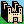

![[AIcons Symbol]](www_images/aicons_anim.gif) Other Icon Collections
Other Icon Collections

To the castle of Anthony Thyssen. (library coordinator)
 Go back to AIcons Home Page.
Go back to AIcons Home Page.
 AIcons Mirrors.
AIcons Mirrors.
Anthony's WWW Image Mirrors.
X Window Icon Libraries
 Anthony's (X Window) Icon Library. (This library of course)
Anthony's (X Window) Icon Library. (This library of course)
Steve Kinzlers "picons" collection (was "faces")
PC Format Icons
AFactor's Iconolog 96 : The Art of Virtual Litter
OS/2 Icon Collection (hobbes) in different editor formats.
Mark's Icon Vault
Macintosh Icons
Jeanette Foshee's Simpson's Icons
IconMania! by
Dubl-Click Software
Clipart Sites
AIcons "Large" Clipart (clipart in AIcon's Library)
A+ Art
Just Some more Clip Art
Amber's Free Art (Also look at her
backgrounds)
WWW Image Libraries
HTML Writers Guild -- Graphics Libraries
AFactor's Iconolog 96 : The Art of Virtual Litter
 (The Iconoweb
has a very nice tile effect)
(The Iconoweb
has a very nice tile effect)
Rutgers WWW Icons and Logos
Ron Kinion's WWW Line Set
Alphabets by Talyce
A+ Art -- Wyatt Lehmenkuler
<osucc@aol.com>
Ted Goff's Cartoon Icons
Eric's Hot Icons
The Icon Depot -- Jayne Payne
<payne@iamerica.net>
Mark's Icon Vault
NetCREATORS Icon Page
The Graphic Station
If you know of an icon library that should be added to the above, please
mail me
and I'll add it to the above.
Created: 7 Feburary 1996
Updated: 15 July 1997
Anthony Thyssen,
<anthony@cit.gu.edu.au>